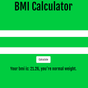
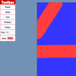

My Projects
-
Fireworks
A simple app that shows fireworks on the screen. You can also shoot fireworks by pressing the left mouse button.
See project See code -

BMI Calculator
A simple app that calculates your body mass index.
See project See code -
Hot and Cold
A visualization of an algorithm that uses the "hot and cold" principle to find it's way towards a target.
See project See code -

Image Slider
An image slider application that makes use of css transitions and media queries.
See project See code -
JavaScript Breakout Game
An implementation of the breakout game in JavaScript.
See project See code -
JavaScript Drum Kit
A drum kit application that makes use of javascript event listeners and css transitions.
See project See code -

JavaScript Paint
An implementation of paint in javascript. This app makes heavy use of javascript event listeners.
See project See code -
Print Key Code
A simple application that shows the keycode of the last pressed key.
See project See code -

Rock Paper Scissors
A simple rock paper scissors game where you play against the computer.
See project See code -
WeatherJS
An application that allows you to check the weather where you live or in many other places in the world.
See project See code -
Year/Decade Progress Bar
An application that shows how much of the year or decade has passed. This application uses javascript date functions.
See project See code -

Sliding Form
A very cool looking sliding form that makes use of css transitions.
See project See code
Work Experience
Omeron Technologies
jun 2019 - aug 2019Olive Studio
jul 2017 - aug 2017Education
ULB Sibiu
sep 2014 - present
LTT Calimanesti
sep 2010 - jun 2014